Everything is drawn and measured; these four are what still need you. Each one has the picture under it, a recommendation, and what happens if you say nothing. Nothing is built — the build starts when you have ruled.
Where a member gives permission to be featured. Same words either way, two placements. Both shown in the light theme and the dark theme, at the width they really appear.
Option A — a row in the privacy bar the member already has
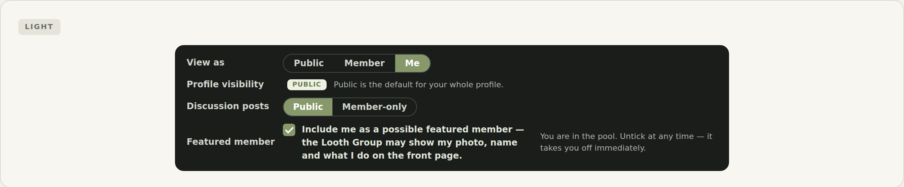
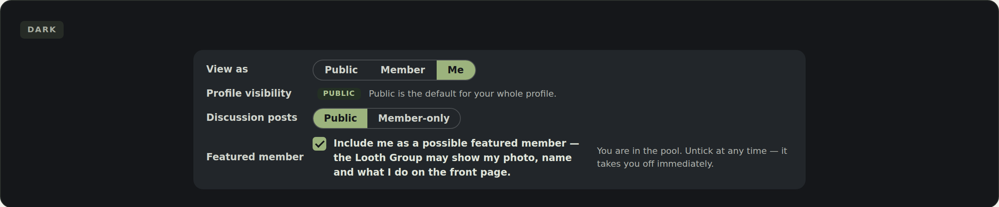
Light, then dark. They look nearly identical because that bar is a deliberate dark slab in both — one rendering to design and maintain.
Option B — its own card underneath
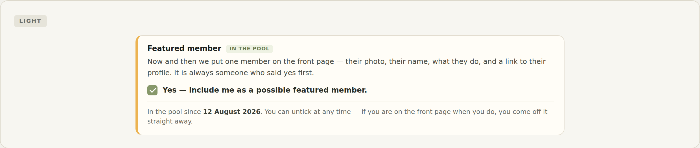
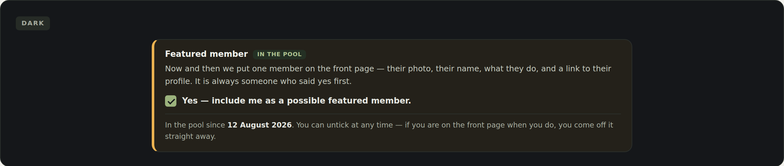
Light, then dark. More room for the sentence and for state (“in the pool since…”).
Recommended: A. It sits with the other three permission controls, in the one bar a member thinks of as “who sees what about me”. Nothing new to find, no new surface to build or keep in step. B is the better answer only if you want featuring to feel like its own thing rather than a privacy setting.
Needs your word. Nothing is built either way until you pick.
Your percentage needs a list behind it. This is the proposed one — each worth 12.5%, every one a field that already exists: a photo · where you are · what you do · a bit about you · a link or two · skills & instruments · photos of your work · a banner.
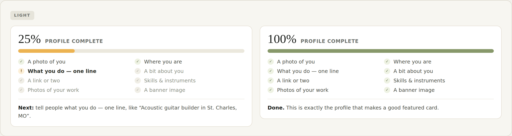
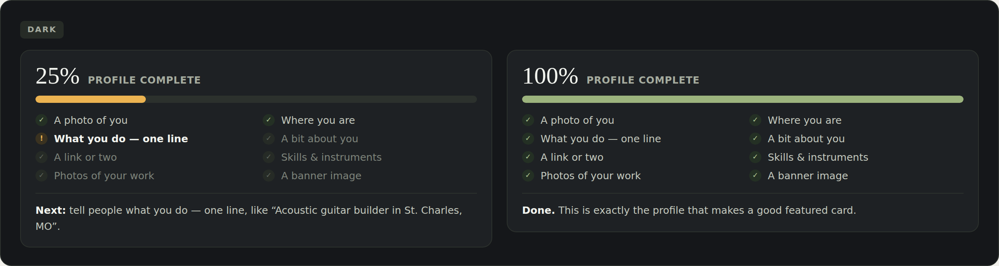
Where most members are today (25%), and a finished profile (100%). Light, then dark.
Recommended: take the eight as listed. Add, drop or reorder any of them — but each change moves every member's number, so it is much cheaper to settle now than after members have seen a score.
Needs your word on the list. Equal weighting unless you say otherwise.
A member ticks the box at 25% complete. Do we take the tick and simply tell them what their card would look like — or refuse it until they fill more in?
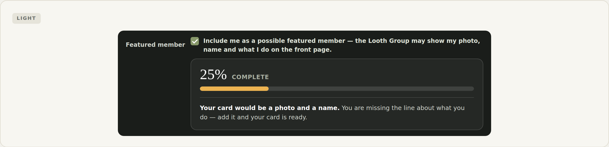
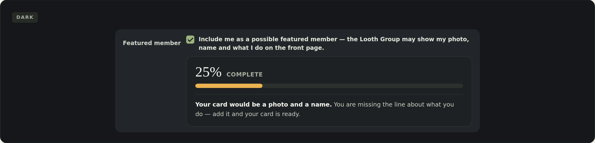
The drawn behaviour: the tick is accepted, and the member is told plainly — “your card would be a photo and a name”.
Recommended: nudge, never refuse. Blocking consent behind a score turns someone away who is trying to say yes, and makes the pool look empty for reasons nobody can see. The front page is still protected: the dash only offers Feature when the card would actually look good.
Needs your word. A hard floor is the alternative — at 50% it would leave 52 people able to volunteer at all.
Drawn as: the member sees it on their own profile and in the tickbox flow, and you see it in the dash. The bigger version — asking every new member for a photo, a city and what they do at sign-up — is backlog item 19, which nobody is building yet.
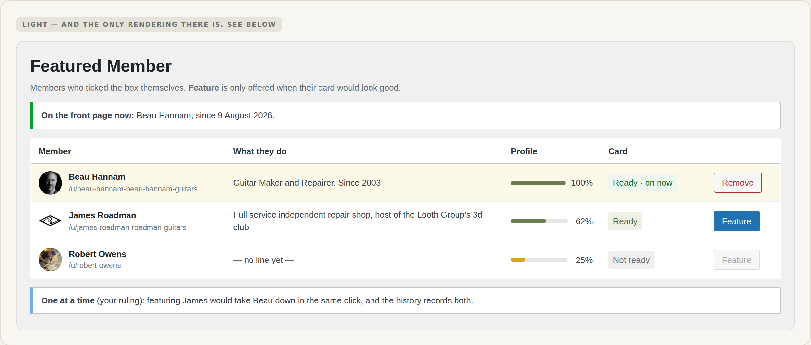
The dash: the percentage, and whether their card is ready. One featured member at a time, per your ruling.
Recommended: keep it here for now, and merge later deliberately. This lane can ship the meter inside featuring without touching sign-up. But the meter and item 19 must share one definition of “complete”, or a member will be told different things in different places — so if you want them as one job, say so now and the two should be re-chartered together.
Needs your word. “Stay here” is the cheap answer and does not close the door.
One featured member at a time (11 Aug), no rotation. The percentage replaces the one-line blurb idea (12 Aug). Consent is explicit and opt-in, off for everybody until they tick it, with no admin override at all — the only way into the pool is a member ticking their own box.
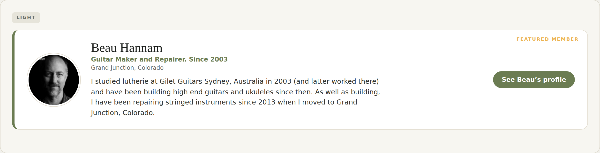
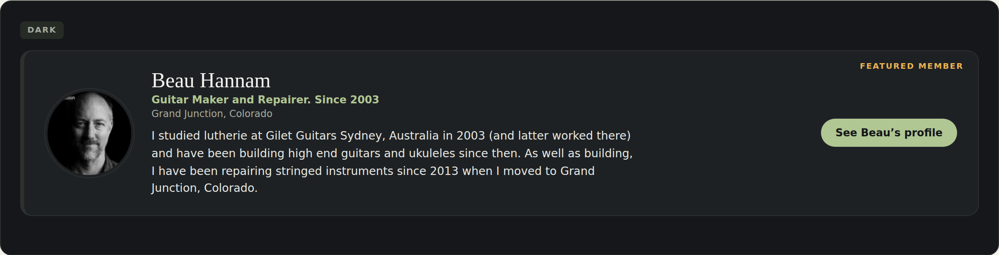
The front-page card, light and dark — fed from a real member instead of the hand-typed config it uses today.
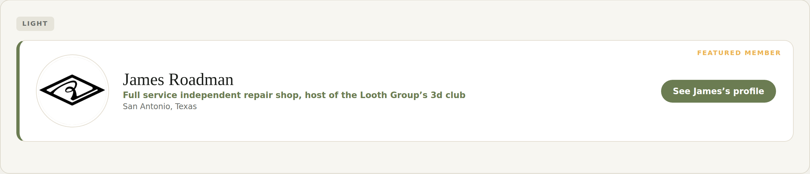
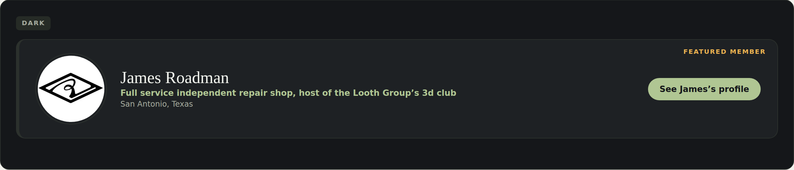
And the ordinary case: only 7 members site-wide have a public About, so most cards run without a paragraph.
tools/profile-completeness-report.sql, read-only against live.
Full drawings: desktop, light and dark ·
the percentage in detail · overview.